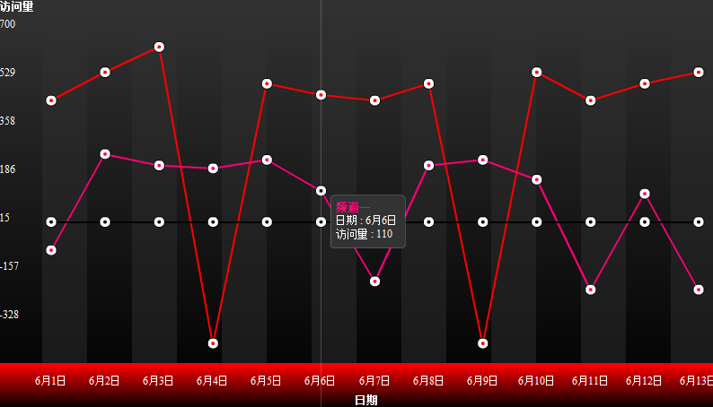
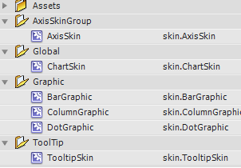
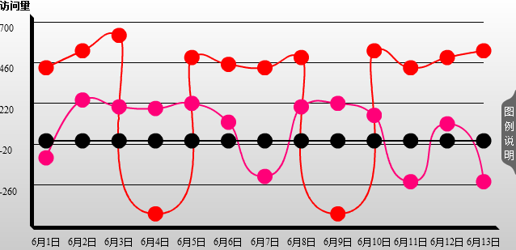

Finger采用一种灵活的组合方式来定义外观，它就是skin和css的有机结合。
CSS定义(更新中)：
/*color-collection是图表图形所需的颜色数组*/
global {color-collection:0xff0000 0xff0078 0xff00d2 0x9c00ff 0x0c00ff 0x00a2ff 0x09c700 0xe7b300 0xe75c00;}
/*定义图表背景颜色和背景透明度*/
chart {bg-colors:0xFFFFFF 0xc8c8c8;bg-alphas:100 100;line-colors:0x000000 0x000000;line-alphas:0 20}
/*定义坐标系样式*/
axis {grid-height:50;padding-left:40;padding-top:30;padding-right:20;padding-bottom:50;offset-v:20;color:0x000000;bottom-color:0xFFFFFF;line-colors:0x272727 0x000000;line-alphas:100 100}
/*定义图形的样式，包括文本颜色，参考线颜色，线的宽度*/
gContainer {color:0x000000;benchmark-color:0x000000;line-width:2;dot-width:2}
/*定义鼠标提示的样式，包括文本颜色，和背景颜色*/
tContainer {color:0x000000;tipbg-color:0xFFFFFF;tipbg-alpha:100;border-width:3;border-color:0x000000;border-alpha:20}
/*定义插件的样式，包括颜色*/
pContainer {color:0x000000;}
/*定义图表说明的样式*/
legend {color:0xFFFFFF;padding-top:0;padding-left:0;benchmark-color:0xCCCCCC;bg-color:0x666666;bg-alpha:100}
因为这些样式基本都是在Skin中得到应用，因此通过修改Skin，您可以添加更多的样式属性支持。具体参见下面的Skin部分。
一段实例
var cssStr = "chart {bg-colors:0x333333 0x000000;bg-alphas:100 100;line-colors:0xFFFFFF 0xFFFFFF;line-alphas:0 10}";
cssStr += "axis {color:0xFFFFFF;bottom-color:0xFFFFFF;line-colors:0xFF0000 0x000000;line-alphas:100 100}";
cssStr += "tContainer {color:0xFFFFFF;tipbg-color:0x333333;tipbg-alpha:100;border-width:1;border-color:0xFFFFFF;border-alpha:20}";

Finger所使用的SKIN是一个包含了素材类的SWF文件，基于skin.fla，您可以复制这个文件，修改素材来创建新的SKIN。注意所有 素材都位于库中，您在时间轴上将看不到任何内容。打开库面板，能看到所有的图形素材：

每一个Skin素材类，都实现updateDisplayList方法，并接受两个参数：parm和style，parm是跟素材相关的一些属性，比如要适应的宽度和高度，style则是在CSS样式表中定义的属性引用。看一段代码示例：
function updateDisplayList(parm:Object,style:Object):void {
graphics.clear();
graphics.beginFill(style["bgColor"],style["bgAlpha"]/100);
graphics.drawRect(0,0,parm.width,parm.height);
graphics.endFill();
}
使用skin.swf所产生的默认效果：
